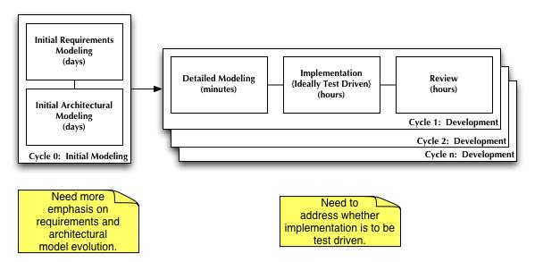
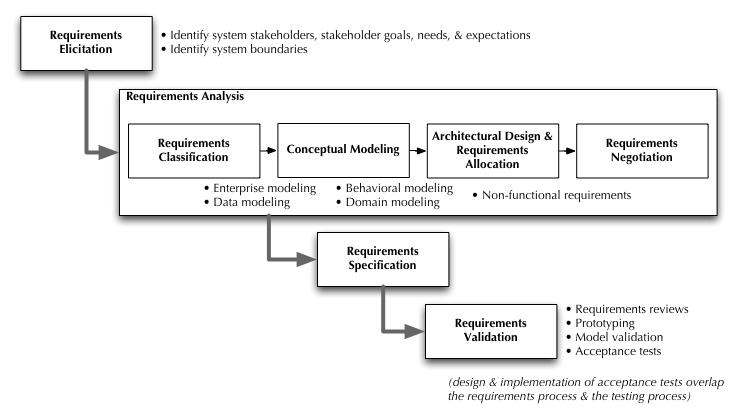
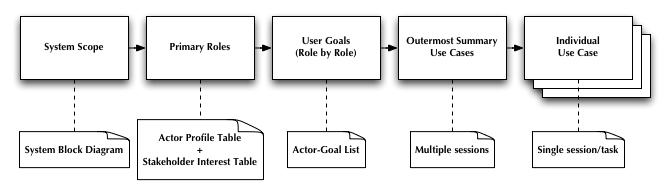
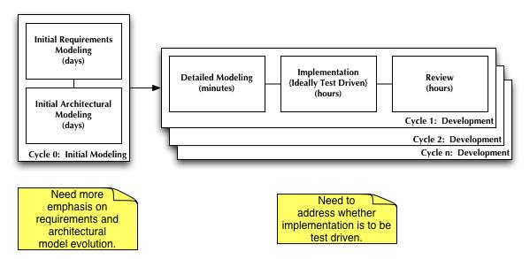
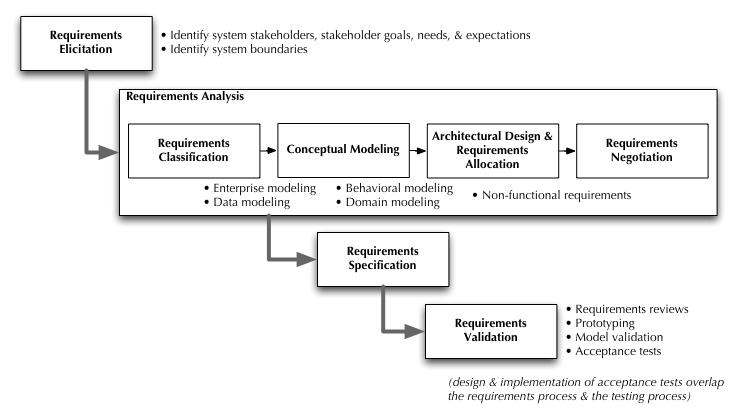
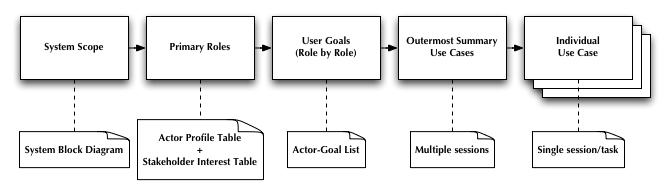

Software Engineering Workflow
Software Engineering Process

Requirements Process

Requirements Elicitation Process




This page is maintained by Christopher J. Adams. It was last updated on 15 May 2005.
Copyright (c) 2005 Christopher J. Adams
Copying and distribution of this page is permitted in any medium, provided this notice is preserved.